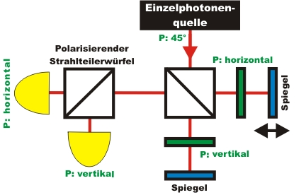
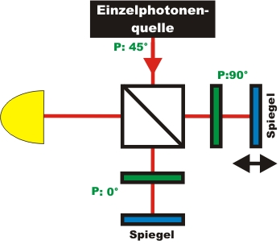
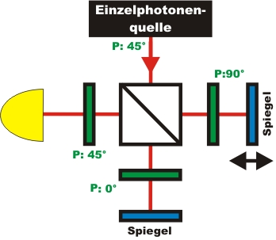

Interferenz Kapitel 4:
Welchen Weg geht das
einzelne Photon im Interferometer?
Im letzten Kapitel wurde in einem Experiment gezeigt, dass ein einzelnes Photon mit sich selbst interferiert, unteilbar ist und sich absolut zufällig verhält. Wenn das Photon unteilbar ist sollte es im Interferometer einen eindeutigen Weg durchlaufen haben. Mit einer unterschiedlichen "Markierung" in jedem Pfad des Interferometers könnte dem einzelnen Photon eine Information über den zurückgelegten Weg angehängt werden. Im folgenden Kapitel soll jedem Photon zunächst eine Wegmarkierung aufgeprägt werden. Im letzten Abschnitt des Kapitels soll die aufgeprägte Wegmarkierung mit einem "Quantenradierer" im nachhinein ausradiert werden.
Wegmarkierung
durch Polarisation
Welche Möglichkeiten gibt es einem einzelnen Photonen eine Markierung aufzuprägen? Die einfachste Möglichkeit ist die Polarisation. Die Einzelphotonenquelle sendet Photonen mit einer Polarisation von 45° aus. Im rechten Interferometerweg werden mit Hilfe eines Polarisationsfilters nur horizontal polarisierte Photonen transmittiert (Abb. 1). Alle anderen Photonen werden in diesem Pfad am Polarisationsfilter absorbiert. Im unteren Interferometerweg werden über den Polarisationsfilter nur vertikal polarisierte Photonen transmittiert. Die Photonen besitzen somit nach dem Interferometer eine Information über den zurückgelegten Weg. Nach dem Interferometer wird ein polarisierender Strahleiteilerwürfel mit zwei Detektoren für einzelne Photonen aufgestellt. Dieser Strahlteilerwürfel transmittiert horizontal polarisierte Photonen und reflektiert vertikal polarisierte Photonen. Mit den Detektoren kann jedem Photon eindeutig ein Weg zugeordnet werden.

Abb. 1: Wegmarkierung im Interferometer durch die Polarisation P
Wegmarkierung im Expriment
Im folgenden interaktiven Experiment sind in jeden Interferometerpfad variable Polarisationsfilter eingesetzt. Jeder Polarisationsfilter hat zwei feste Einstellungen: 0° für vertikale Polarisation und 90° für horizontale Polarisation. Mit Hilfe der grauen Tasten im interaktiven Experiment kann jeder Polarisationsfilter in die jeweils gewünschte Einstellung gebracht werden. Im interaktiven Experiment wurde der polarisierende Strahlteilerwürfel noch nicht eingesetzt (Abb. 2).
Wenn beide Polarisationsfilter senkrecht oder beide horizontal stehen, so sind die Wege nicht markiert. Sobald die beiden Polarisationsfilter 90° zueinander stehen sind die Wege markiert und können eindeutig unterschieden werden. Führen Sie das nachfolgende Experiment mit verschiedenen Einstellungen der Polarisationsfilter durch. Während der Messung können Sie die Einstellung der Polarisationsfilter verändern. Welches Verhalten können Sie bezüglich der Interferenz und der Weginformation beobachten?

Abb. 2: Wegmarkierung mit variablen Polarisationsfilter: 0° und 90°
|
|
Beobachtung und Erklärung:
Wenn die Wege im Interferometer nicht unterschieden werden können interferiert das einzelne Photonen mit sich selbst. Eine deutliche Zu- und Abnahme der Interferenzrate ist beobachtbar. Wenn die Wege im Interferometer allerdings unterscheidbar sind (Polarisationsfilter stehen 90° zueinander) verschwindet das Interferenzmuster. Es ist dabei egal, ob die Weginformation nach dem Interferometer durch einen polarisierenden Strahlteilerwürfel ausgewertet wird oder wie im oberen interaktiven Experiment eben nicht. Alleine die vorhandene Information reicht schon aus, damit das Interferenzmuster verschwindet.Allgemein kann gesagt werden, dass sich die Interferenz eines einzelnen Photons mit sich selbst und das Wissen über den zurückgelegten Weg gegenseitig ausschließen. Dies ist eine wichtiges Grundgesetz für alle Arten von Quantenobjekten. Interferenz und Welcher-Weg-Information verhalten sich komplementär zueinander.
Das gleiche Phänomen kann auch am Doppelspalt beobachtet werden. Sobald die beiden Spalte z. B. durch zueinander um 90° stehende Polarisationsfolien markiert werden verschwindet das Interferenzmuster.
Das Phänomen Interferenz und Weginformation kann auch mit hellem Laserlicht im Interferometer oder am Doppelspalt beobachtet werden. Das zu beobachtende Verhalten mit hellem Licht hat allerdings nichts mit der Quantenphysik zu tun, da es über polarisierte klassische elektromagnetische Wellen erklärt werden kann. Wellen mit orthogonaler Polarisation können nicht interferieren, weshalb das Interferenzmuster verschwindet. Das Experiment mit hellem Licht kann trotzdem sehr gut als Analogie zu dem eigentlichen Quantenphänomen verwendet werden.
Ausradieren der Wegmarkierung: Der Quantenradierer
Kann die dem Photonen aufgeprägte Weginformation nach dem Interferometer wieder ausradiert werden? Möglich ist das Auslöschen der Weginformation durch einen Polarisationsfilter, der nach dem Interferometer auf 45° steht (Abb. 3), was im oberen interaktiven Experiment durchgeführt werden kann. Vor dem auf 45° stehenden Polarisationsfilter kann jedem Photon der zurückgelegte Weg eindeutig nachgewiesen werden. Nach dem auf 45° stehendem Polarisationsfilter kann nicht mehr unterschieden werden, welchen Weg das Photon zurückgelegt hat. Die Weginformation wurde ausradiert. Wenn im oberen interaktiven Experiment die beiden Polarisationsfilter senkrecht zueinander stehen kann über einen grauen Taster ein solcher Quantenradierer eingesetzt werden. Führen Sie das interaktive Experiment mit dem Quantenradierer und ohne durch. Welches Verhalten ist mit dem Einsatz des Quantenradierers bei vorhandener Weginformation beobachtbar?

Abb. 3: Die den Photonen aufgeprägte Weginformation wird durch
den auf 45° stehenden Polarisationsfilter ausradiert
Beobachtung und Erklärung:
Wird bei vorhandener Weginformation der Quantenradierer eingesetzt, so kann sofort wieder Interferenz beobachtet werden. Aufgrund des auf 45° stehenden Quantenradierers nimmt die Zählrate um 50% ab, da am zusätzlichen Polarisationsfilter nur 50% der ankommenden Photonen transmittiert werden. Die restlichen 50% der Photonen werden an diesem Polarisationsfilter absorbiert. Die im Interferometer vorhandene Weginformation wird mit dem auf 45° stehendem Polarisationsfilter ausgelöscht. Woher weiß das einzelne Photon im Interferometer ob am Ende ein Quantenradierer vorhanden ist oder nicht?Das gleiche Phänomen des Quantenradierers kann auch mit hellem Licht im Interferometer oder am Doppelspalt mit markierten Wegen beobachtet werden. Hier erfolgt die Erklärung allerdings wieder über die Polarisation einer klassischen elektromagnetischen Welle und hat nichts mit der Quantenphysik zu tun. Das Experiment Quantenradierer mit hellem Licht kann trotzdem sehr gut als Analogie zu dem eigentlichen Quantenphänomen verwendet werden.
Originaldaten aus dem
Experiment: Interferenz und Weginformation
Zum Kapitel 5: Für Experten:
Frequenzkorrelation und weißes Licht
Zurück zur Übersicht
Autor: P. Bronner, Dezember 2008